Super_ADB 项目全景文档
PySide6 桌面 ADB 工具 · 项目结构 / 依赖 / 继承 / 风格 / 扩展指南
📖 功能介绍与使用说明
Super_ADB 核心功能模块的详细介绍、操作步骤与界面展示。截图可放置于 项目说明/截图/ 目录，文件名与下方占位一致即可自动显示。
🖥️ 主界面

放置于 项目说明/截图/主界面.png
功能介绍
主界面采用左侧设备列表 + 右侧 Tab 页面的布局，顶部为系统操作区，底部为状态栏。集成设备连接、系统操作、应用管理、文件传输、日志抓取、性能监控六大核心功能于一体。
使用说明
- 启动后自动扫描已连接的 USB 设备和局域网设备
- 左侧列表选择目标设备，右侧 Tab 切换功能页面
- 顶部按钮区提供一键重启、代理设置、投屏、抓包等快捷操作
- 标题栏下拉菜单可切换 6 套主题，设置自动保存
🔌 设备连接与无线调试
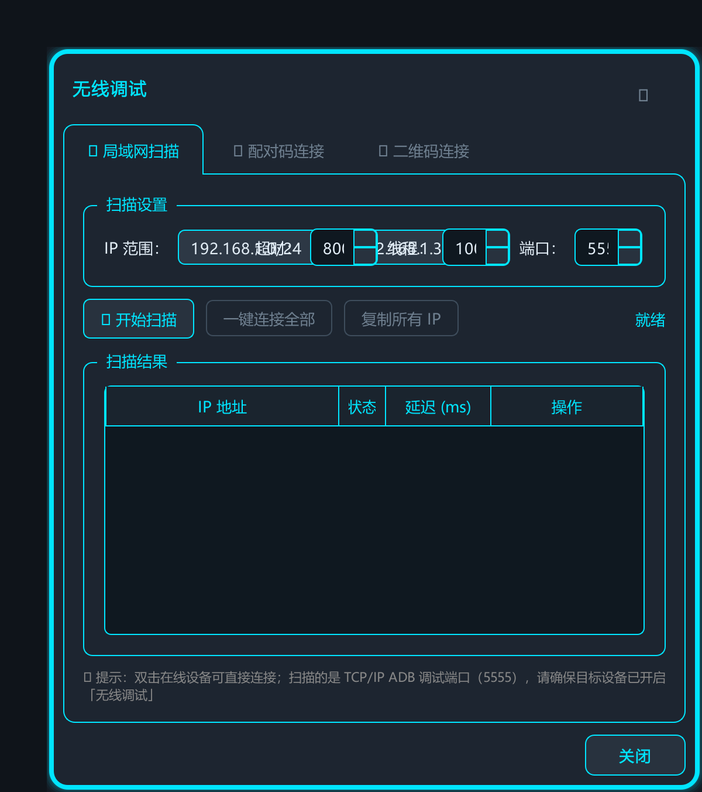
放置于 项目说明/截图/无线调试.png
功能介绍
三合一无线调试弹窗，支持局域网扫描自动发现、配对码连接（adb pair）、二维码连接（mDNS 自动监听 + 扫码回填）三种方式。同时支持 USB 直连，自研 ADB 协议栈与官方 adb 可一键切换。
使用说明
- USB 连接：手机开启 USB 调试，插入数据线，设备列表自动出现
- 局域网扫描：点击「无线调试」→「局域网扫描」，自动扫描 5555 端口设备
- 配对码连接：手机开发者选项 → 无线调试 → 使用配对码配对，输入 6 位配对码
- 二维码连接：手机展示配对二维码，PC 端扫码自动完成 mDNS 发现与配对
📁 文件管理

放置于 项目说明/截图/文件管理.png
功能介绍
设备文件树浏览器，支持上传/下载、删除、重命名、权限修改（右键「授权 777」）、文本预览、递归搜索。自研 ADB sync 协议快速传输，上传速度可达官方 adb 的 2.7 倍。只读分区自动检测并附解锁引导。
使用说明
- 选择设备后自动加载根目录文件列表
- 双击文件夹进入，点击路径栏可快速跳转
- 拖拽本地文件到窗口即可上传，右键文件可下载/删除/重命名
- 搜索框支持当前路径和递归搜索两种模式
- 右键「授权 777」可快速修改文件权限（需 root）
📋 日志抓取

放置于 项目说明/截图/日志抓取.png
功能介绍
多标签 logcat 查看器，支持关键字过滤、标签/进程/消息星标、实时流式输出、日志级别筛选、导出保存。可同时打开多个设备的日志标签页，互不干扰。
使用说明
- 选择设备后自动启动 logcat 实时输出
- 顶部过滤框输入关键字实时过滤，支持正则表达式
- 点击日志行左侧星标可标记重要日志，过滤栏可只看星标
- 右键可复制单行/全部日志，或导出为 .txt 文件
- 「新建标签」可同时监控多个设备或多个过滤条件
📊 性能监控
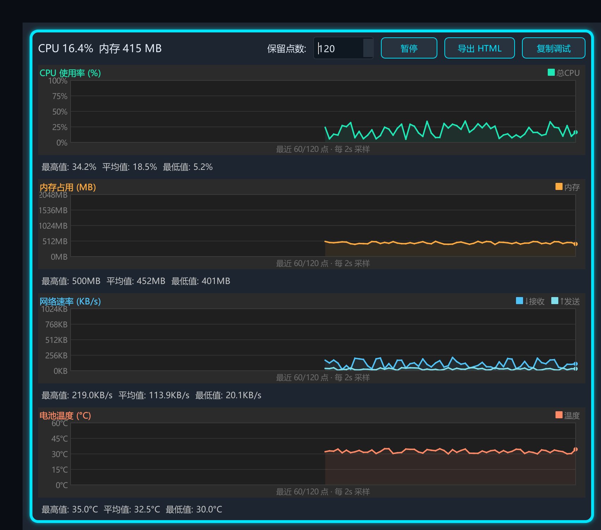
放置于 项目说明/截图/性能监控.png
功能介绍
双层性能监控体系：设备级（CPU 多核分核/内存/温度/FPS/网络速率）+ 应用级（12 项图表指标、内存泄漏自动检测、ANR/OOM 检测、hprof 自动抓取）。支持 HTML 报告导出，数据实时刷新。
使用说明
- 设备级监控：主界面「性能监控」Tab，实时显示 CPU/内存/温度/FPS 曲线
- 应用级监控：选择目标应用，点击「应用性能监控」打开独立窗口
- 内存泄漏检测自动运行，发现泄漏时自动抓取 hprof 并提示
- 监控结束后可导出 HTML 报告，包含所有图表和异常记录
- 图表支持缩放、暂停、数据点查看
🐒 Monkey 压测
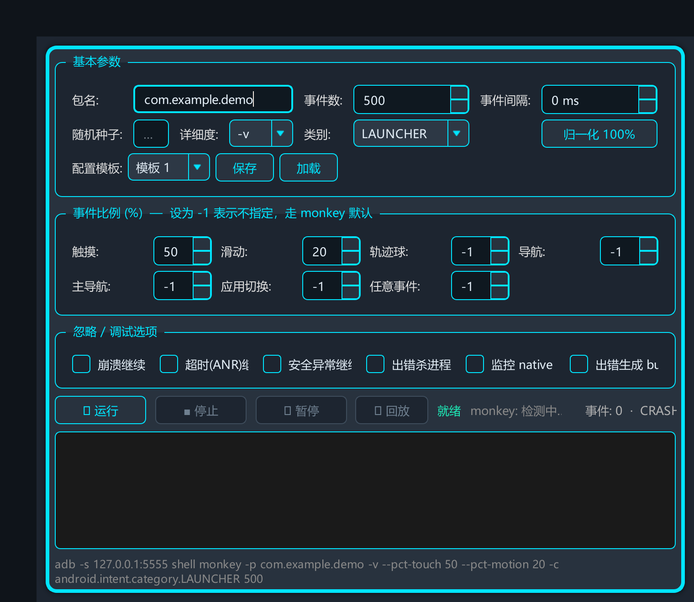
放置于 项目说明/截图/Monkey压测.png
功能介绍
Monkey 压力测试管理窗口，支持命令模板自定义、暂停/继续/停止控制、实时事件饼图统计、崩溃报告自动拉取、事件回放。可设置事件数、间隔、种子、触摸/手势/轨迹球比例等参数。
使用说明
- 选择目标应用，设置事件总数、间隔时间、种子等参数
- 点击「开始」启动 Monkey，实时显示事件统计饼图
- 运行中可随时「暂停」/「继续」/「停止」
- 发生崩溃时自动拉取 tombstone 和 logcat 崩溃报告
- 支持事件回放，用相同种子复现崩溃场景
📦 应用管理（安装/解包）

放置于 项目说明/截图/安装解包.png
功能介绍
APK 安装与解包工具，支持拖拽安装、批量安装、安装进度实时显示、APK 元信息解析（包名/版本/权限/组件）、解包查看资源。三阶段安装流程（push → pm install → rm），失败时自动诊断原因。
使用说明
- 拖拽 APK 文件到窗口，或点击「选择 APK」浏览
- 自动解析 APK 信息（包名、版本、权限列表、四大组件）
- 点击「安装」开始，进度条实时显示上传和安装进度
- 安装失败时显示具体原因（空间不足/签名冲突/版本降级等）
- 「解包」可查看 APK 内部资源文件结构
🌐 网络抓包
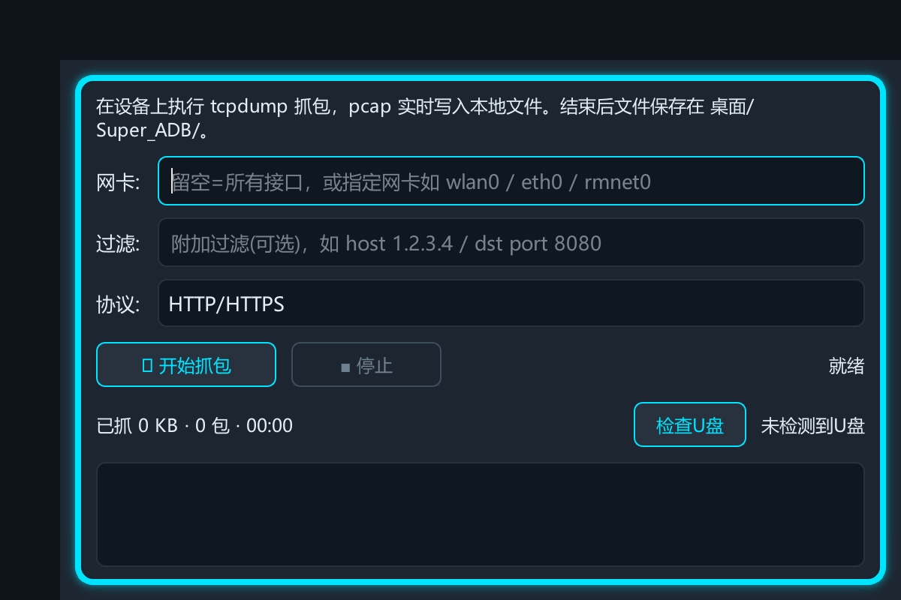
放置于 项目说明/截图/网络抓包.png
功能介绍
tcpdump 网络抓包 + PCAP 解析一体化工具。自动检测设备架构并推送对应 tcpdump 二进制（arm64/arm），支持 BPF 过滤器、实时包数统计、停止后自动拉取 pcap 文件并解析。PCAP 解析器支持 HTTP/HTTPS/TCP/UDP 协议分析、流重组、请求/响应查看。
使用说明
- 点击「网络抓包」打开窗口，自动检测设备是否已安装 tcpdump
- 未安装时自动推送对应架构的二进制到 /data/local/tmp/（需 root）
- 输入 BPF 过滤器（如 "tcp and port 80"），点击「开始抓包」
- 实时显示捕获包数、过滤器接收数、内核丢包率
- 点击「停止」自动拉取 pcap 文件并进入解析界面
- 解析界面可查看每个数据包的详细信息，支持 HTTP 请求/响应查看
📺 scrcpy 投屏
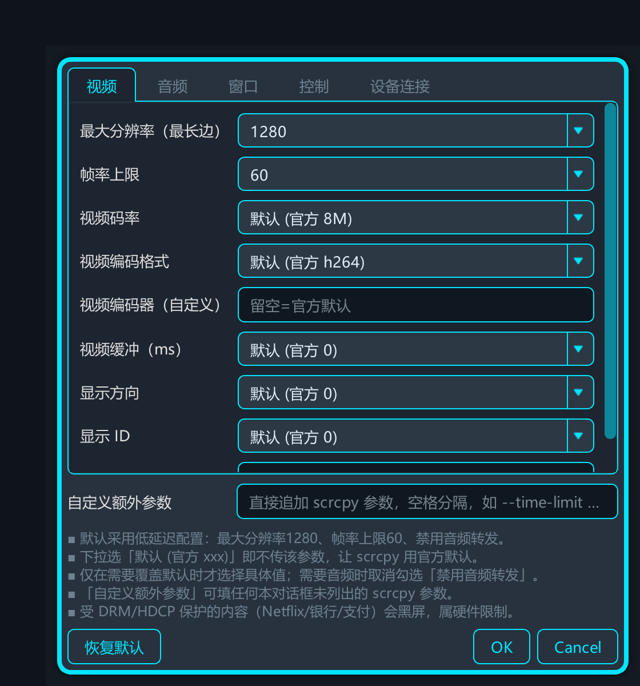
放置于 项目说明/截图/投屏.png
功能介绍
集成官方 scrcpy 投屏工具，支持分辨率/码率/帧率/编码器/渲染驱动等参数自定义。低延迟投屏，支持键鼠反向控制、文件拖拽传输、屏幕录制。参数设置自动保存，下次启动自动加载。
使用说明
- 选择设备后点击「投屏」按钮启动 scrcpy
- 「投屏设置」可调整分辨率（默认 1080p）、码率（默认 8Mbps）、帧率（默认 60fps）
- 可选择编码器（h264/h265）和渲染驱动（direct3d/opengl/metal）
- 投屏窗口中可直接用键鼠控制手机，拖拽文件到窗口即可传输
- 支持屏幕录制，录制文件保存到本地
🛠️ 便捷工具

放置于 项目说明/截图/便捷工具.png
功能介绍
集成多款实用小工具：命令行（PowerShell/终端）、JSON 工具（格式化/压缩/差异对比/YAML 互转/Schema 校验/树形视图）、哈希校验（MD5/SHA1/SHA256/SHA512/CRC32 等 8 种算法，支持 Windows 右键菜单）、时间戳转换（秒/毫秒/微秒/纳秒自动识别）、ADB 交互式终端、设备信息查看。
使用说明
- 命令行：一键打开系统终端，自动切换到项目目录
- JSON 工具：粘贴 JSON 自动格式化，支持左右对比差异，树形视图展开
- 哈希校验：拖拽文件即算，支持多算法同时计算，可注册 Windows 右键菜单
- 时间戳转换：输入时间戳自动识别单位并转换为北京时间，双向互转
- ADB 终端：交互式 adb shell，支持命令历史和自动补全
- 设备信息：一键查看设备型号、Android 版本、序列号、屏幕分辨率、IP 地址等
🖼️ 对话框模拟运行截图
对 对话框/ 目录下 22 个弹窗自动离屏渲染（QT_QPA_PLATFORM=offscreen，构造参数以桩对象模拟）生成的模拟运行截图，配功能与使用说明。截图在每次运行本脚本时自动更新，保存于 项目说明/截图/对话框/；如需跳过（加快生成）可加 --跳过截图 参数。
🪟 ADB 交互式终端弹窗
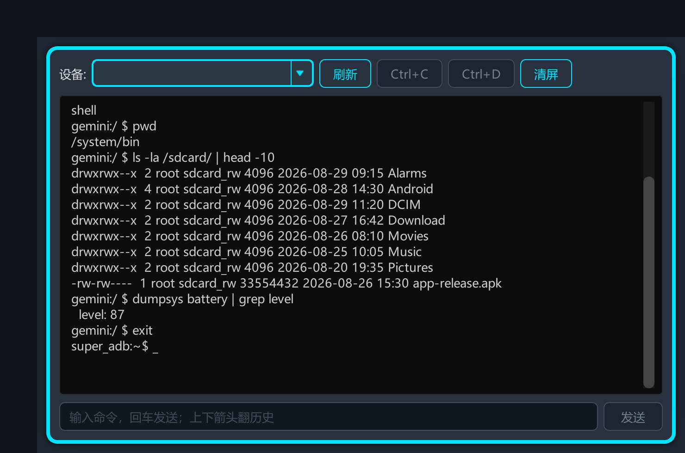
重新运行脚本可再生成
功能介绍 （ADB终端对话框.py · ADB终端对话框）
自研 ADB 模式专属：点击「便携工具 → ADB命令行」打开的独立窗口。
类似 adb shell 不带参数进入的交互式终端，可持续敲命令、实时看输出。
功能:
- 设备下拉框列所有已连接设备，点击自动连接终端
- 与主窗口三个设备选择栏双向同步
- 交互式 shell（自研adb客户端.交互式Shell），支持 TCP + USB
- 命令历史（上下箭头）、Ctrl+C / Ctrl+D、清屏
- ANSI 转义序列过滤，深色终端风格
样式:
……
使用方法
- 自研 ADB 模式专属：点击「便携工具 → ADB命令行」打开的独立窗口。
- 设备下拉框列所有已连接设备，点击自动连接终端
- 与主窗口三个设备选择栏双向同步
主要操作：刷新Ctrl+CCtrl+D清屏发送自研 ADB 客户端不可用正在打开终端...会话已结束正在连接...请先选择设备
🪟 IP 局域网扫描弹窗
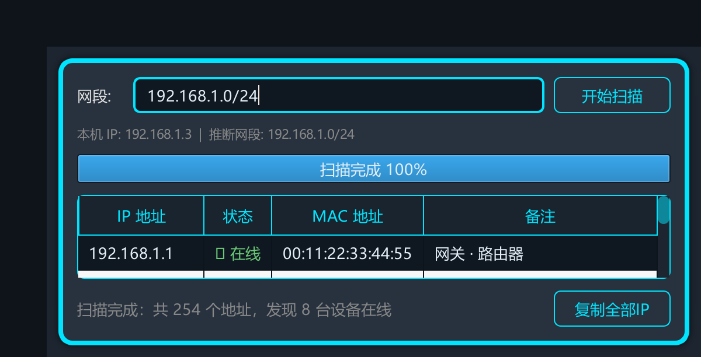
重新运行脚本可再生成
功能介绍 （IP扫描对话框.py · IP扫描对话框）
点击主界面「便捷工具 → IP扫描」按钮弹出的独立窗口：
- 自动识别本机 IP 所在网段
- 多线程并发 ping 扫描 1-254
- 结果表格展示：IP 地址、状态、MAC 地址、备注（网关/本机/未知）
- 双击 IP 可复制到剪贴板
- 扫描在后台线程执行，不阻塞 UI
与时间戳/哈希校验弹窗同款样式：内层亮边卡片 + 主题色边框。
使用方法
- IP 局域网扫描弹窗
- 点击主界面「便捷工具 → IP扫描」按钮弹出的独立窗口：
- 多线程并发 ping 扫描 1-254
- 双击 IP 可复制到剪贴板
- 扫描在后台线程执行，不阻塞 UI
主要操作：开始扫描复制全部IP未能自动识别本机 IP，请手动输入网段请输入网段网段格式不正确，如 192.168.1.0/24正在扫描...扫描中...\n没有可复制的IP
🪟 JSON 工具弹窗
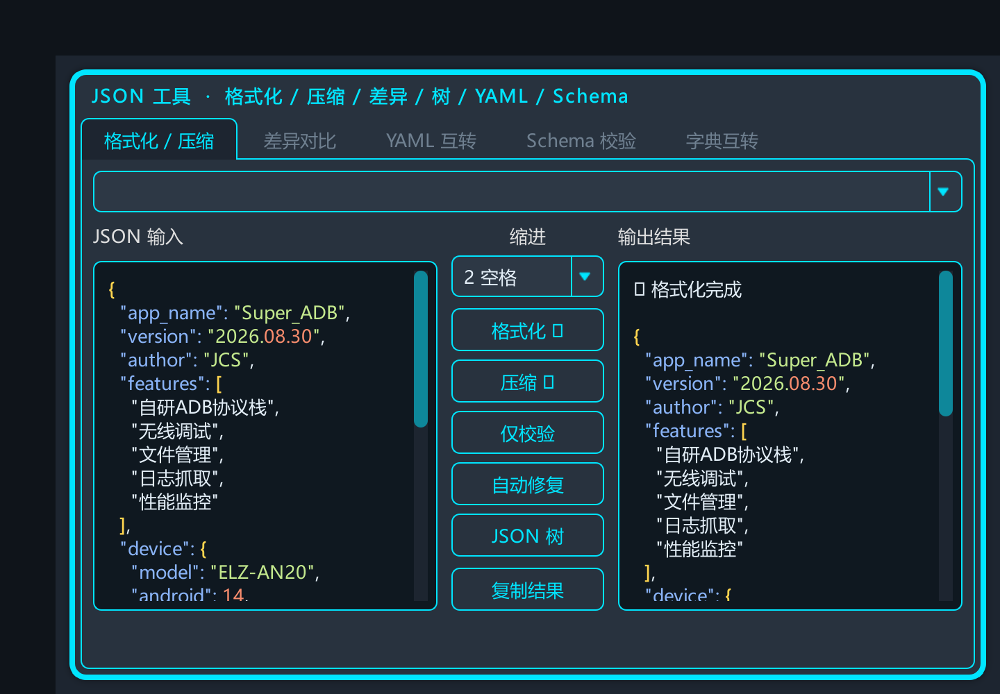
重新运行脚本可再生成
功能介绍 （JSON工具对话框.py · Json工具对话框）
点击主界面「便捷工具 → JSON工具」按钮弹出的独立窗口。
Tab 1 「格式化 / 压缩」:
- 输入 JSON，选缩进 → 一键格式化 / 压缩 / 复制
- 历史记录下拉（复用 收藏下拉框 模式，最近 5 个粘贴的 JSON，✕ 可删）
- 校验按钮：仅校验不格式化，✅ 合法 / ❌ 失败 + 错误位置
- 修复按钮：单引号→双引号 / 去除末尾逗号 / 剥离 // 与 /* */ 注释 / 未引号键名加引号
- 解析错误可点击定位：用 setExtraSelections 高亮出错行并滚动
- 「JSON 树」按钮：弹出独立窗口展示折叠树视图 + 双向同步
Tab 2 「差异对比」: 左右两栏输入 → 一键对比，三色高亮（绿=新增 / 红=删除 / 黄=修改）
Tab 3 「YAML 互转」: JSON↔YAML 转换（纯 Python 实现常见配置子集）
……
使用方法
- 点击主界面「便捷工具 → JSON工具」按钮弹出的独立窗口。
- 输入 JSON，选缩进 → 一键格式化 / 压缩 / 复制
- 历史记录下拉（复用 收藏下拉框 模式，最近 5 个粘贴的 JSON，✕ 可删）
- 解析错误可点击定位：用 setExtraSelections 高亮出错行并滚动
- Tab 2 「差异对比」: 左右两栏输入 → 一键对比，三色高亮（绿=新增 / 红=删除 / 黄=修改）
- Tab 4 「Schema 校验」: 上传 .schema.json，对格式化页输入做 type/required/properties 校验
主要操作：格式化 ▶压缩 ◀仅校验自动修复JSON 树复制结果开始对比JSON → YAMLYAML → JSON选择文件...校验（用格式化页输入）JSON → 字典字典 → JSON✅ 格式化完成
🪟 Monkey 压力测试 —— 独立配置 + 运行窗口

重新运行脚本可再生成
功能介绍 （Monkey压测窗口.py · Monkey压测窗口）
点击 btnRunningApps_2 (Monkey) 弹出。
功能：
- 可视化配置 monkey 全部常用参数 (包名/事件数/间隔/种子/详细度/
事件比例/忽略选项/类别)
- 流式输出 monkey 日志，关键事件高亮
(CRASH 红 / ANR 橙 / Events injected 绿 / :Monkey: 默认)
- 实时事件计数、耗时计时
- 运行/停止、关窗即停
执行方式：
……
使用方法
- 点击 btnRunningApps_2 (Monkey) 弹出。
主要操作：▶ 开始回放■ 停止归一化 100%保存加载▶ 运行⏸ 暂停↻ 回放回放中…保存模板失败未找到 monkey 进程运行中…▶ 继续已拉取崩溃报告
🪟 PCAP 解析器对话框
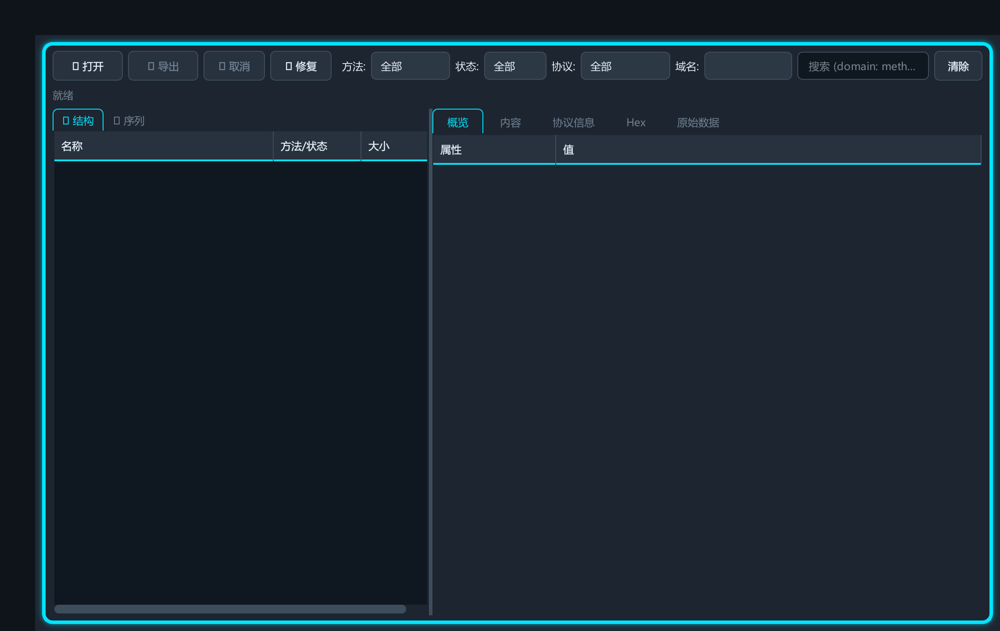
重新运行脚本可再生成
功能介绍 （PCAP解析对话框.py · Pcap解析对话框）
类 Charles 的 pcap 解析展示工具。
从 tcpdump 抓包对话框点击「解析 PCAP」打开，或独立打开 pcap 文件。
功能:
- 解析 pcap 文件，提取 HTTP 请求/响应对
- 左栏：请求列表（时间/方法/URL/状态码/大小/耗时/源IP/目标IP）
- 右栏：详情 Tab（概览/内容/协议信息/Hex/原始数据），内容内含文本/十六进制/JSON/原始数据/查询字符串等多视图切换
- 过滤：方法/状态码/域名/关键词搜索，支持 domain:/method:/status: 高级语法
- 支持大文件流式解析（后台线程，不卡 UI）
- 导出：JSON / CSV / HAR 格式
- Hex 查看器：二进制数据查看
……
使用方法
- 从 tcpdump 抓包对话框点击「解析 PCAP」打开，或独立打开 pcap 文件。
- 导出：JSON / CSV / HAR 格式
主要操作：📂 点击选择文件📂 打开📤 导出⏹ 取消🔧 修复清除已复制到剪贴板正在解析... 初始化中正在取消...无数据可保存
🪟 tcpdump 抓包弹窗

重新运行脚本可再生成
功能介绍 （TCPDump对话框.py · Tcpdump对话框）
点击系统操作栏「tcpdump 抓包」弹出。配置网卡 / 过滤表达式后，
在设备上执行 `tcpdump -i
抓包数据写入设备存储，停止后 adb pull 回本地：
桌面/Super_ADB/tcpdump_
结束后（点停止或关窗）文件留在桌面，可用 Wireshark 等打开回看。
使用方法
- 点击系统操作栏「tcpdump 抓包」弹出。配置网卡 / 过滤表达式后，
主要操作：▶ 开始抓包■ 停止检查U盘正在检查U盘...未检测到U盘抓包中…准备中…⏳ 正在停止...正在停止抓包...已校验 · 可安全拔出U盘校验未通过 · 请勿拔出U盘已停止 · 拉取失败已停止 · 正在校验U盘文件...准备拉取文件...
🪟 WiFi 配对/连接历史记录
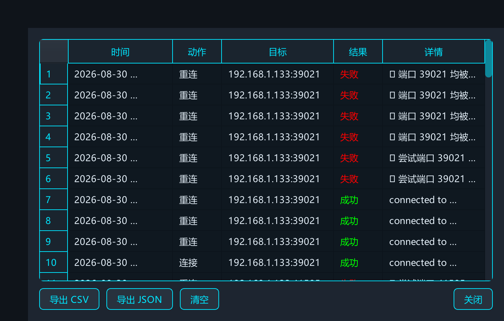
重新运行脚本可再生成
功能介绍 （WiFi历史对话框.py · WifiHistoryDialog）
以表格展示配对、连接、重连的操作历史（时间 / 动作 / 目标 / 结果 / 详情），
支持导出 CSV / JSON 与清空。
使用方法
- 支持导出 CSV / JSON 与清空。
主要操作：导出 CSV导出 JSON清空关闭
🪟 WiFi 密码查看器弹窗
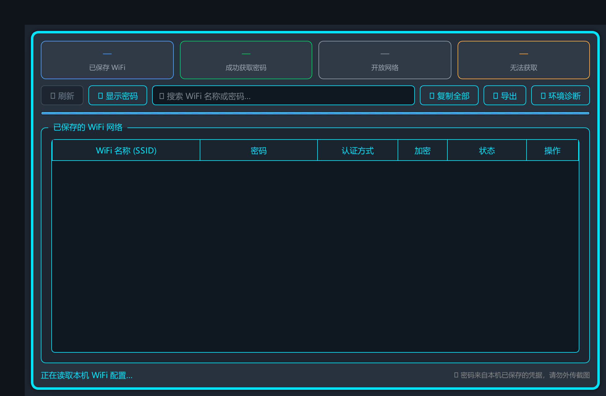
重新运行脚本可再生成
功能介绍 （WiFi对话框.py · WiFi对话框）
点击主界面「便捷工具 → WiFi 密码」弹出的独立窗口：
- 后台线程读取本机已保存的全部 WiFi 配置（不阻塞 UI）
- 统计卡片 + 表格化展示：SSID / 密码 / 认证方式 / 加密 / 状态
- 密码默认掩码，一键切换明文；支持搜索过滤、单条复制、批量复制、导出
- 内置「环境诊断」，直接定位"为什么这台电脑读不到 WiFi 密码"
使用方法
- 点击主界面「便捷工具 → WiFi 密码」弹出的独立窗口：
- 密码默认掩码，一键切换明文；支持搜索过滤、单条复制、批量复制、导出
主要操作：🔄 刷新👁 显示密码📋 复制全部💾 导出🩺 环境诊断复制正在读取本机 WiFi 配置…—🙈 隐藏密码\n🩺 正在诊断…🩺 诊断完成
🪟 WiFi 配对连接弹窗
重新运行脚本可再生成
功能介绍 （WiFi配对对话框.py · WiFi配对对话框）
用于 Android 11+ 无线调试的「配对码」流程：
- 在设备连接区点击「WiFi 配对」弹出本窗口
- 用户输入配对 IP、配对端口、6 位配对码（可直接粘贴「IP:端口」自动拆分）
- 后台执行 `adb pair IP:PORT CODE`
- 配对成功后提示用户，并可选直接 `adb connect IP:调试端口`
关键设计：
- 所有 adb 命令都走后台线程，绝不阻塞 UI
- 支持从剪贴板一键粘贴手机上显示的「IP:端口 配对码」
- 配对成功后回填主窗口 ipInput，方便下一步 connect
使用方法
- 在设备连接区点击「WiFi 配对」弹出本窗口
- 用户输入配对 IP、配对端口、6 位配对码（可直接粘贴「IP:端口」自动拆分）
- 支持从剪贴板一键粘贴手机上显示的「IP:端口 配对码」
主要操作：📋 粘贴🔑 开始配对🔗 连接调试端口❓ 使用说明📜 历史重连删除5555✅ 配对成功
🪟 scrcpy 投屏参数设置对话框（映射官方 scrcpy 4.1 命令行参数）。

重新运行脚本可再生成
功能介绍 （scrcpy_设置对话框.py · Scrcpy设置对话框）
（无描述）
使用方法
- 复选框默认不勾选（不挂 --flag）；勾选后才传。no_audio 例外，默认勾选。
主要操作：恢复默认
🪟 二维码连接页面
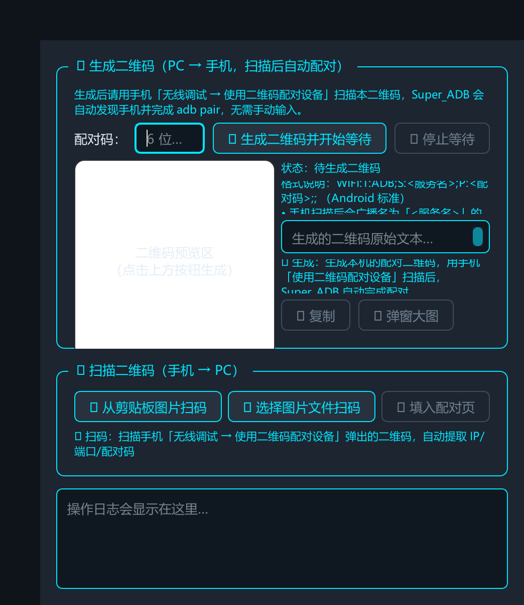
重新运行脚本可再生成
功能介绍 （二维码连接页.py · 二维码连接页）
从「配对码连接」页拆分出来的独立标签页，集中管理：
- 📷 扫码：从剪贴板图片或文件扫描手机无线调试二维码，自动填回配对页
- 🔳 生成二维码：生成 Android 无线调试标准格式的二维码，供手机扫描并自动配对
使用方法
- 📷 扫码：从剪贴板图片或文件扫描手机无线调试二维码，自动填回配对页
- 🔳 生成二维码：生成 Android 无线调试标准格式的二维码，供手机扫描并自动配对
- 关于「生成二维码让手机扫描」的配对原理（关键，曾踩坑）：
- 手机用「无线调试 → 使用二维码配对设备」扫描后，会按这个名字在局域网
- 旧实现把 S 填成 IP:端口、且没有 mDNS 监听，所以手机扫描毫无反应。
主要操作：✨ 生成二维码并开始等待⏹ 停止等待📋 复制🔍 弹窗大图📋 从剪贴板图片扫码📂 选择图片文件扫码📥 填入配对页📋 复制二维码内容关闭二维码预览区\n（点击上方按钮生成）生成中…状态：正在生成二维码…状态：生成二维码失败状态：二维码图像渲染失败
🪟 修改系统时间对话框
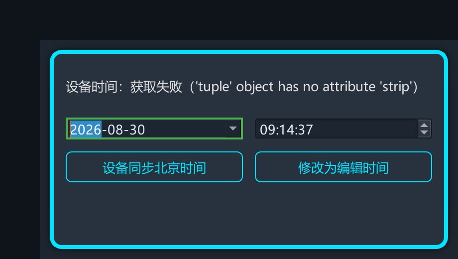
重新运行脚本可再生成
功能介绍 （修改时间对话框.py · 修改时间对话框）
展示设备系统时间，支持一键同步北京时间和手动编辑修改。
主题跟随主窗口，apply_theme 切换时更新全局样式。
使用方法
- 展示设备系统时间，支持一键同步北京时间和手动编辑修改。
主要操作：设备同步北京时间修改为编辑时间正在修改时间…
🪟 Super_ADB 关于弹窗
重新运行脚本可再生成
功能介绍 （关于对话框.py · 关于对话框）
展示公众号二维码、版本号与反馈引导，**支持运行时切换主题**。
使用方法
主要操作按钮：
✕知道了
🪟 文件管理器右键「计算哈希」独立入口
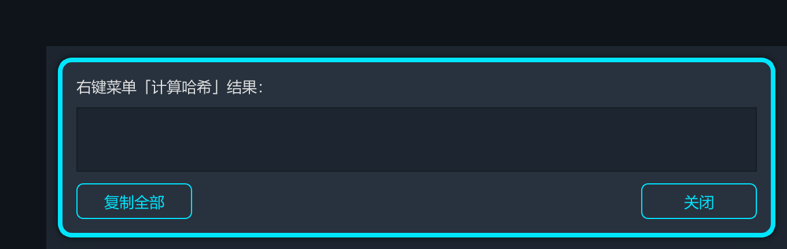
重新运行脚本可再生成
功能介绍 （哈希上下文菜单.py · 哈希上下文菜单）
由 Windows 资源管理器右键菜单调用：
pythonw 哈希上下文菜单.py "%1"
接收任意数量的文件路径，用 compute_hashes_batch 计算 MD5/SHA1/SHA256，
弹窗展示每个文件的哈希值（带复制按钮 + 一键复制全部）。
使用方法
- 弹窗展示每个文件的哈希值（带复制按钮 + 一键复制全部）。
主要操作：复制复制全部关闭已复制\n
🪟 文件哈希校验工具弹窗
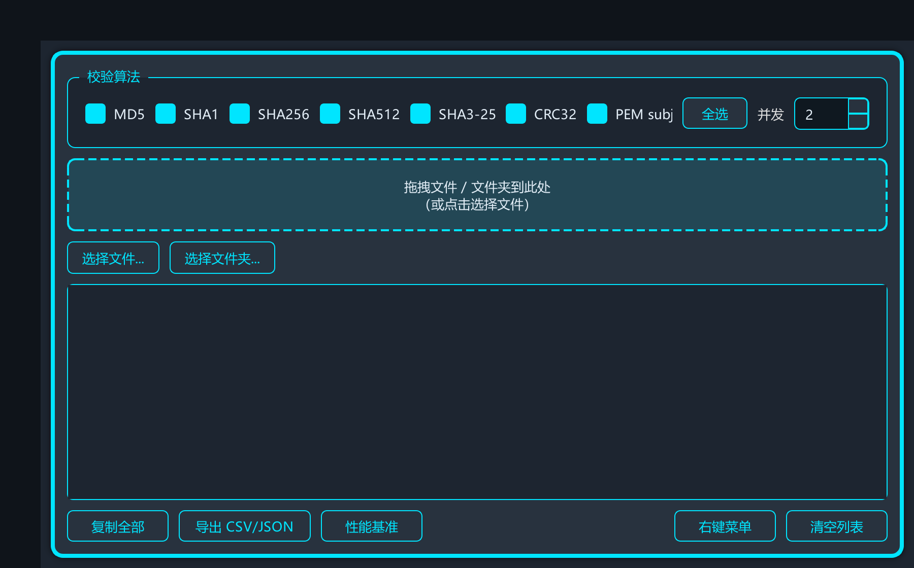
重新运行脚本可再生成
功能介绍 （哈希校验对话框.py · 哈希校验对话框）
点击主界面「便捷工具 → MD5」按钮弹出的独立窗口：
- 算法可勾选：MD5 / SHA1 / SHA256 / SHA512 / SHA3-256 / CRC32（工厂 + 注册表，可扩展）
- 拖入文件 / 文件夹自动计算，文件夹弹窗选「递归 / 非递归 / 通配符」展开
- 每个文件独立显示进度条 + 各算法哈希值 + 复制按钮
- 大文件后台并发计算：QSemaphore 控制并发数（默认 4，可调）
- 「复制全部」→ 多行文本（含文件名/大小/各哈希）一次贴到 bug 报告
- 「导出 CSV / JSON」→ 批量算完一键导出索引表
- 「性能基准」→ 选个文件分别用 5 种算法算，显示吞吐量 MB/s
- QSettings 持久化上次算法勾选 + 并发数
使用方法
- 点击主界面「便捷工具 → MD5」按钮弹出的独立窗口：
- 算法可勾选：MD5 / SHA1 / SHA256 / SHA512 / SHA3-256 / CRC32（工厂 + 注册表，可扩展）
- 拖入文件 / 文件夹自动计算，文件夹弹窗选「递归 / 非递归 / 通配符」展开
- 每个文件独立显示进度条 + 各算法哈希值 + 复制按钮
- 「复制全部」→ 多行文本（含文件名/大小/各哈希）一次贴到 bug 报告
- 「导出 CSV / JSON」→ 批量算完一键导出索引表
主要操作：复制确定取消选择文件...运行基准测试全选选择文件夹...复制全部导出 CSV/JSON性能基准右键菜单清空列表失败已复制
🪟 安装 / 解包 弹窗
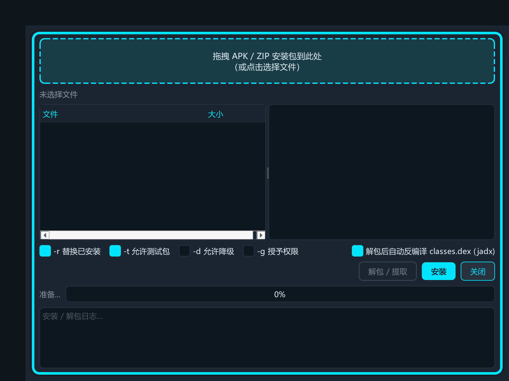
重新运行脚本可再生成
功能介绍 （安装解包对话框.py · 安装解包对话框）
点击主界面「安装/解包」按钮弹出的独立对话框，模仿 Android Studio APK Analyzer：
- 支持把 APK / ZIP / AAR / JAR 等 zip 包拖入（也可点击选择文件）
- 以树形展示包内文件，点击文件可查看内容（文本直接预览 / 二进制显示大小与十六进制片段）
- 底部勾选 adb install 参数，默认勾选 -r (替换) 与 -t (允许测试包)
- 「安装」按钮执行 adb install 把拖入的包安装到当前设备
- 「解包」按钮把包内全部文件提取到指定目录
UI 与逻辑分离：本模块只依赖 adb_utils.Adb设备操作 实例与 get_serial 回调。
使用方法
- 点击主界面「安装/解包」按钮弹出的独立对话框，模仿 Android Studio APK Analyzer：
- 支持把 APK / ZIP / AAR / JAR 等 zip 包拖入（也可点击选择文件）
- 以树形展示包内文件，点击文件可查看内容（文本直接预览 / 二进制显示大小与十六进制片段）
- 底部勾选 adb install 参数，默认勾选 -r (替换) 与 -t (允许测试包)
- 「安装」按钮执行 adb install 把拖入的包安装到当前设备
主要操作：解包 / 提取安装关闭APK 元信息将显示在此处正在打开…正在解析 APK 元信息 / 签名证书…
安装中…准备...安装完成安装失败反编译中…
🪟 局域网 ADB 设备扫描弹窗
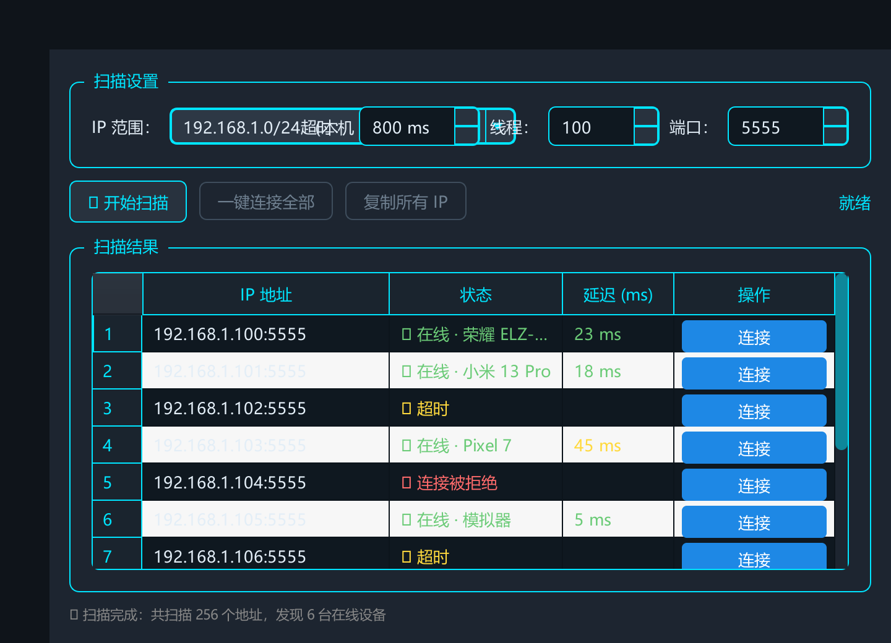
重新运行脚本可再生成
功能介绍 （局域网扫描对话框.py · 局域网扫描对话框）
点击主界面「便捷工具 → 局域网扫描」按钮弹出的独立窗口：
- 自动检测本机 IP，默认扫描同网段（端口 5555）
- 支持自定义 IP 范围（CIDR / 起始-结束 / 单个 IP）
- 后台线程并发扫描，实时显示结果（IP / 状态 / 延迟 / 操作）
- 发现的设备可直接一键连接或复制 IP
使用方法
- 局域网 ADB 设备扫描弹窗
- 点击主界面「便捷工具 → 局域网扫描」按钮弹出的独立窗口：
- 自动检测本机 IP，默认扫描同网段（端口 5555）
- 后台线程并发扫描，实时显示结果（IP / 状态 / 延迟 / 操作）
- 发现的设备可直接一键连接或复制 IP
主要操作：▶ 开始扫描一键连接全部复制所有 IP连接■ 停止扫描正在停止...⛔ 扫描已停止连接中...
🪟 统一无线调试面板

重新运行脚本可再生成
功能介绍 （无线调试对话框.py · 无线调试对话框）
把原本分散的「局域网扫描」「WiFi 配对码连接」「二维码连接」三个入口
合并到同一个弹窗里，用 QTabWidget 分三个标签页，避免主界面按钮过多、入口分散。
使用方法
- 把原本分散的「局域网扫描」「WiFi 配对码连接」「二维码连接」三个入口
- 局域网扫描对话框 / WiFi配对对话框 都不调用 .show()，而是作为子控件嵌入标签页。
- 显式调用两者的 清理() 停掉后台扫描 / 连接 / 回填线程，避免悬挂进程。
- 方便主窗口把 IP:端口 填回连接输入框并刷新设备列表。
- 二维码连接页 持有 pair_dialog 引用，扫码结果可一键填入配对页。
主要操作：✕关闭
🪟 时间戳转换弹窗
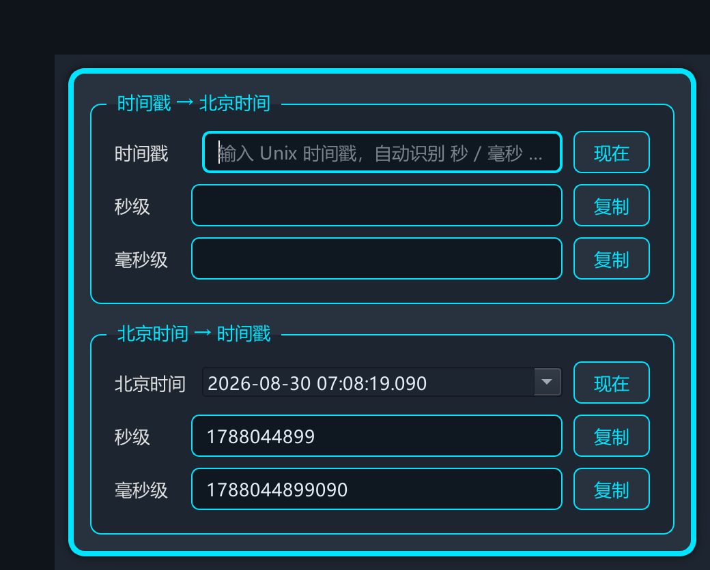
重新运行脚本可再生成
功能介绍 （时间戳对话框.py · 时间戳对话框）
点击主界面「便捷工具 → 时间戳转换」按钮弹出的独立窗口：
- 时间戳 → 北京时间：自动识别 秒 / 毫秒 / 微秒 / 纳秒，实时转换并显示秒级 + 毫秒级北京时间
- 北京时间 → 时间戳：用日期时间选择器（默认当前北京时间），实时给出 Unix 秒级 + 毫秒级时间戳
- 每个结果框带「复制」按钮，一键粘贴到日志 / bug 报告
使用方法
- 点击主界面「便捷工具 → 时间戳转换」按钮弹出的独立窗口：
- 北京时间 → 时间戳：用日期时间选择器（默认当前北京时间），实时给出 Unix 秒级 + 毫秒级时间戳
- 每个结果框带「复制」按钮，一键粘贴到日志 / bug 报告
- 日期时间选择器读取时显式标注为北京时间，适用于中国用户本机（时区 = 北京时间）。
主要操作：现在复制（输入无效，需为整数时间戳）
🪟 Super_ADB 环境配置弹窗
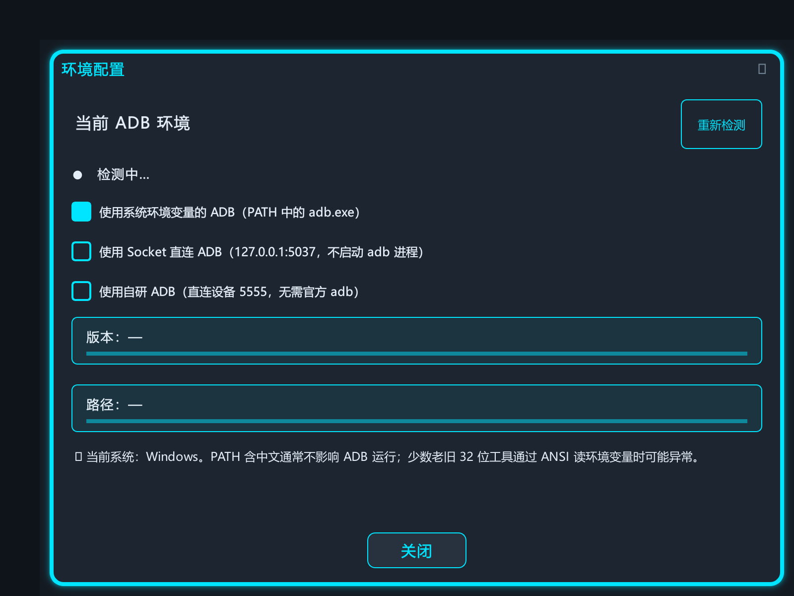
重新运行脚本可再生成
功能介绍 （环境配置对话框.py · 环境配置对话框）
展示当前 ADB 版本 / 路径信息；在 Windows 下额外展示本工具内置的 ADB 路径，
并提供「添加到 PATH」按钮一键写入用户级环境变量。
使用方法
- 并提供「添加到 PATH」按钮一键写入用户级环境变量。
主要操作：✕重新检测关闭检测中…正在切换 ADB 环境…已就绪（自研 ADB 模式，直连设备 5555）已关闭 ADB server
🪟 设备信息对话框
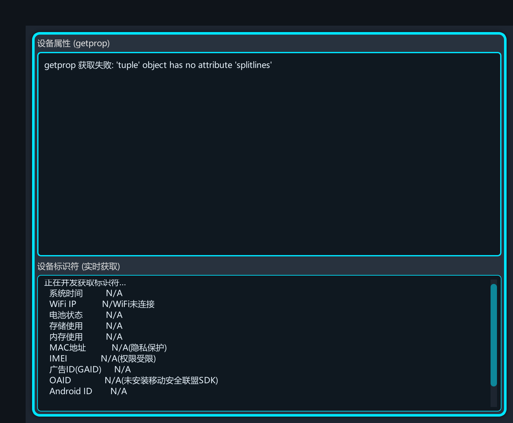
重新运行脚本可再生成
功能介绍 （设备信息对话框.py · 设备信息对话框）
双框展示：上面 getprop 属性（中文分组），下面标识符（多线程逐行追加）。
主题跟随主窗口，apply_theme 切换时更新全局样式。
抽出的公共入口 `获取设备信息_方法B(adb, serial)` 同样供应用性能监控等
其他模块复用, 保证 UI 界面 与 后台采集 走同一份逻辑。
使用方法
从主界面相应入口按钮打开本弹窗（具体入口见「功能清单」章节的按钮映射表）。
🪟 证书安装对话框
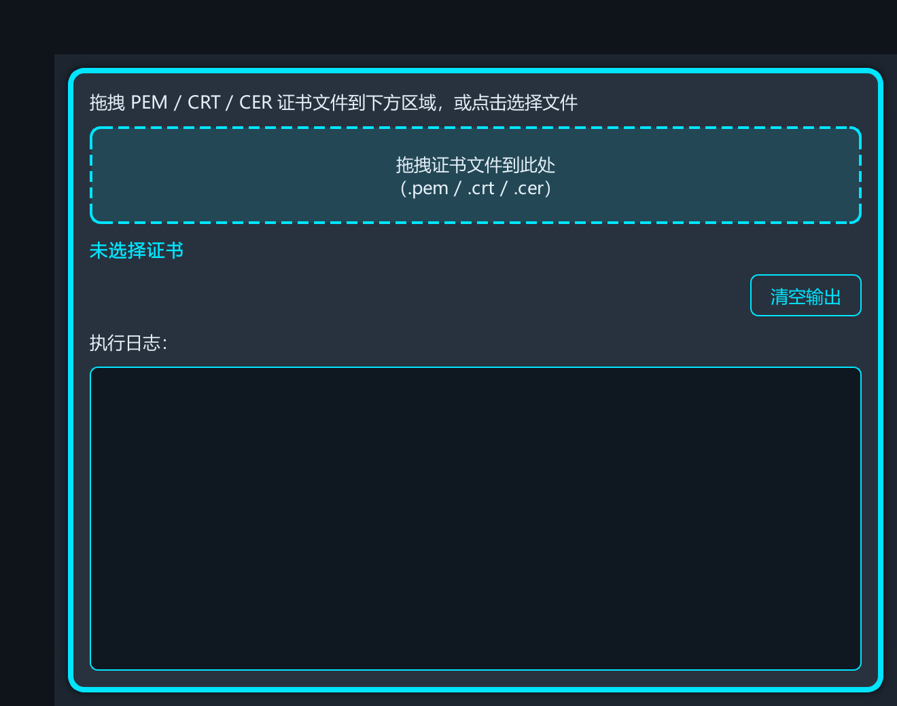
重新运行脚本可再生成
功能介绍 （证书安装对话框.py · 证书安装对话框）
点击主界面「SSL」按钮弹出：
- 拖拽 PEM / CRT / CER 证书文件到拖拽区（也可点击选择文件）
- 检查设备 /system 分区读写权限（adb root + remount + 写入验证）
- 计算证书 subject hash（参考 哈希校验对话框._Pem主题哈希器：文件内容 MD5 取前 8 位）
- 重命名为
.0 并 adb push 到 /system/etc/security/cacerts/ - chmod 777 赋予权限
- 输出框实时展示每一步执行的命令与结果
UI 与逻辑分离：本模块只依赖 adb 实例与 获取序列号 回调。
使用方法
- 点击主界面「SSL」按钮弹出：
- 拖拽 PEM / CRT / CER 证书文件到拖拽区（也可点击选择文件）
主要操作：清空输出
📊 项目概览
基于 PySide6 的 Android ADB 桌面工具集，支持设备管理、文件传输、性能监控、证书安装、WiFi 调试等功能。
技术栈
Python 3.14 PySide6 (Qt6) ADB 协议 (自研) RSA2048 认证 QSS 主题系统 (7套) 无边框自定义窗口 多线程 (QThreadPool) PyInstaller 打包 自研ADB协议栈 (纯Python) openh264 投屏解码 scrcpy 投屏 OpenGL 渲染 cryptography pyusb (USB通道) 原生 WinUSB (Windows) 无线配对 SPAKE2+ 三种ADB模式切换 ADB交互式终端
📁 项目结构
Super_ADB_Win/ 为项目根目录，按功能划分为 12 个包，所有包均含 __init__.py。
📁 Super_ADB_Win/
📁 对话框/ -*- coding: utf-8 -*-
📁 工具/ -*- coding: utf-8 -*-
📁 自研adb/
📁 打包/ -*- coding: utf-8 -*-
📁 hooks/
📁 监控/ -*- coding: utf-8 -*-
📁 脚本/ -*- coding: utf-8 -*-
📁 页面/ -*- coding: utf-8 -*-
📁 项目UI/ -*- coding: utf-8 -*-
📁 项目启动入口/ -*- coding: utf-8 -*-
🔗 依赖关系
模块间的导入依赖关系，箭头表示「依赖于」方向。主入口为核心枢纽，对话框和页面依赖工具层。
包级依赖
.workbuddy"] PKG["外部扩展
外部扩展"] PKG2["对话框
-*- coding: utf-8 -*-"] PKG3["工具
-*- coding: utf-8 -*-"] PKG4["打包
-*- coding: utf-8 -*-"] PKG5["监控
-*- coding: utf-8 -*-"] PKG6["脚本
-*- coding: utf-8 -*-"] PKG7["资源
资源"] PKG8["配置
配置"] PKG9["页面
-*- coding: utf-8 -*-"] UI["项目UI
-*- coding: utf-8 -*-"] PKG10["项目启动入口
-*- coding: utf-8 -*-"] PKG2 --> PKG3 PKG2 --> UI PKG3 --> PKG2 PKG3 --> UI PKG5 --> PKG2 PKG5 --> PKG3 PKG5 --> UI PKG6 --> PKG2 PKG6 --> PKG5 PKG6 --> UI PKG6 --> PKG10 PKG9 --> PKG3 PKG9 --> UI UI --> PKG3 PKG10 --> PKG2 PKG10 --> PKG3 PKG10 --> PKG5 PKG10 --> PKG9 PKG10 --> UI
核心模块依赖
依赖规则
| 层级 | 可依赖 | 不可依赖 |
|---|---|---|
| 入口层 | 所有层 | — |
| 对话框层 | UI层、工具层 | 入口层（延迟导入除外） |
| 页面层 | 工具层 | 对话框层、入口层 |
| 监控层 | 工具层 | 对话框层、入口层 |
| 工具层 | 无（纯逻辑） | 所有UI层 |
🏛️ 继承关系
项目采用「基类 + Mixin」组合模式。对话框统一继承 对话框基类，主窗口通过多继承组合 3 个 Mixin。按基类分组展示，点击展开/折叠。
▸ 核心基类（项目自定义）
对话框基类 基类
(4个子类)
Json工具对话框 对话框
对话框\JSON工具对话框.py
哈希校验对话框 对话框
对话框\哈希校验对话框.py
安装解包对话框 对话框
对话框\安装解包对话框.py
证书安装对话框 对话框
对话框\证书安装对话框.py
Ui_MainWindow 基类
(1个子类)
主窗口 对话框
项目启动入口\Super_ADB_主入口.py
▸ Mixin 多继承
无边框缩放Mixin Mixin
(2个子类)
关于对话框 对话框
对话框\关于对话框.py
无线调试对话框 对话框
对话框\无线调试对话框.py
弹窗打开Mixin Mixin
(1个子类)
主窗口 对话框
项目启动入口\Super_ADB_主入口.py
设备管理Mixin Mixin
(1个子类)
主窗口 对话框
项目启动入口\Super_ADB_主入口.py
主题系统Mixin Mixin
(1个子类)
主窗口 对话框
项目启动入口\Super_ADB_主入口.py
▸ 工具/协议基类
ScrollChart 基类
(1个子类)
AppScrollChart
监控\应用性能监控.py
AdbConnection 基类
(1个子类)
UsbAdbConnection
工具\自研adb\usb连接.py
▸ Qt 原生基类
QDialog 基类
(19个子类)
ADB终端对话框 对话框
对话框\ADB终端对话框.py
IP扫描对话框 对话框
对话框\IP扫描对话框.py
ReplayDialog 对话框
对话框\Monkey压测窗口.py
Scrcpy设置对话框 对话框
对话框\scrcpy_设置对话框.py
TextPreviewDialog 对话框
页面\文件管理页.py
WiFi对话框 对话框
对话框\WiFi对话框.py
WiFi配对对话框 对话框
对话框\WiFi配对对话框.py
WifiHistoryDialog 对话框
对话框\WiFi历史对话框.py
修改时间对话框 对话框
对话框\修改时间对话框.py
关于对话框 对话框
对话框\关于对话框.py
哈希上下文菜单
对话框\哈希上下文菜单.py
基准测试对话框 对话框
对话框\哈希校验对话框.py
对话框基类 对话框
项目UI\对话框基类.py
局域网扫描对话框 对话框
对话框\局域网扫描对话框.py
无线调试对话框 对话框
对话框\无线调试对话框.py
时间戳对话框 对话框
对话框\时间戳对话框.py
环境配置对话框 对话框
对话框\环境配置对话框.py
目录拖拽对话框 对话框
对话框\哈希校验对话框.py
设备信息对话框 对话框
对话框\设备信息对话框.py
QWidget 基类
(16个子类)
DeskCatWidget
页面\小猫.py
EventPieChart
对话框\Monkey压测窗口.py
Monkey压测窗口 对话框
对话框\Monkey压测窗口.py
Pcap解析对话框 对话框
对话框\PCAP解析对话框.py
ScrollChart
监控\设备性能监控.py
Tcpdump对话框 对话框
对话框\TCPDump对话框.py
_BodyViewer
对话框\PCAP解析对话框.py
主窗口 对话框
项目启动入口\Super_ADB_主入口.py
二维码连接页
对话框\二维码连接页.py
哈希结果行
对话框\哈希校验对话框.py
应用性能监控
监控\应用性能监控.py
文件管理页
页面\文件管理页.py
日志查看器页
页面\日志查看器页面.py
终端页面
页面\终端页面.py
行号区域
对话框\JSON工具对话框.py
设备性能监控
监控\设备性能监控.py
QObject 基类
(23个子类)
_ConnectWorker 工作器
对话框\WiFi配对对话框.py
_ConnectWorker 工作器
对话框\局域网扫描对话框.py
_EnrichWorker 工作器
对话框\局域网扫描对话框.py
_LoadWorker 工作器
对话框\WiFi对话框.py
_MdnsBridge
对话框\二维码连接页.py
_PairWorker 工作器
对话框\WiFi配对对话框.py
_PairingPollWorker 工作器
对话框\二维码连接页.py
_ProgressWorkerSignals 工作器
页面\文件管理页.py
_QrGenWorker 工作器
对话框\二维码连接页.py
_QrPairWorker 工作器
对话框\二维码连接页.py
_ScanWorker 工作器
对话框\局域网扫描对话框.py
_WorkerSignals 工作器
页面\文件管理页.py
_WorkerSignals 工作器
页面\日志查看器页面.py
_中文上下文菜单过滤器
项目启动入口\Super_ADB_主入口.py
_完成接收器
项目启动入口\Super_ADB_主入口.py
_工作器信号 工作器
对话框\修改时间对话框.py
_扫描工作器 工作器
对话框\IP扫描对话框.py
_文本发送器
项目启动入口\Super_ADB_主入口.py
_终端信号桥
对话框\ADB终端对话框.py
_终端信号桥
页面\终端页面.py
_结果信号
对话框\设备信息对话框.py
单实例
项目启动入口\Super_ADB_主入口.py
工作器信号 工作器
项目启动入口\Super_ADB_主入口.py
QRunnable 基类
(5个子类)
_CmdWorker 工作器
页面\文件管理页.py
_CmdWorker 工作器
页面\日志查看器页面.py
_ProgressCmdWorker 工作器
页面\文件管理页.py
命令工作器 工作器
对话框\修改时间对话框.py
命令工作器 工作器
项目启动入口\Super_ADB_主入口.py
QThread 基类
(6个子类)
任务线程
对话框\安装解包对话框.py
加载包线程
对话框\安装解包对话框.py
哈希工作线程
对话框\哈希校验对话框.py
安装线程
对话框\安装解包对话框.py
构建目录树线程
对话框\安装解包对话框.py
证书安装线程
对话框\证书安装对话框.py
QTreeWidget 基类
(2个子类)
_CopyTreeWidget
对话框\PCAP解析对话框.py
圆角树控件
对话框\JSON工具对话框.py
QTableWidget 基类
(1个子类)
_CopyTableWidget
对话框\PCAP解析对话框.py
QTextEdit 基类
(1个子类)
_CopyTextEdit
对话框\PCAP解析对话框.py
QLineEdit 基类
(1个子类)
_历史输入框
页面\终端页面.py
QComboBox 基类
(3个子类)
Json历史下拉框
对话框\JSON工具对话框.py
_RangeCombo
对话框\局域网扫描对话框.py
收藏下拉框
工具\收藏下拉框.py
QLabel 基类
(1个子类)
拖拽区域
项目UI\弹窗样式.py
QFrame 基类
(1个子类)
_StatCard
对话框\WiFi对话框.py
QStyledItemDelegate 基类
(1个子类)
收藏委托
工具\收藏下拉框.py
继承关系统计
类定义总数: 152 继承关系数: 92 核心基类: 2 Mixin: 4
对话框分类
| 类型 | 基类 | 说明 |
|---|---|---|
| 标准对话框 | 对话框基类(QDialog) | 统一图标/样式/发光/主题 |
| 无边框对话框 | QDialog + 无边框缩放Mixin | 自定义标题栏/边框/缩放 |
| QWidget | 独立窗口/Tab页面 |
🎨 项目风格
代码命名、UI 定义、主题系统、架构模式的统一规范。
命名规范
| 元素 | 规范 | 示例 |
|---|---|---|
| 新建文件 | 中文命名 | 证书安装对话框.py |
| 新建类 | 中文命名 | class 证书安装对话框 |
| 新建方法 | 中文命名 | def 刷新标题栏按钮样式 |
| 新建变量 | 中文命名 | 序列号 = 获取序列号() |
| 历史代码 | 英文命名（保持兼容） | class 安装解包对话框 |
| UI控件 | 驼峰命名（.ui定义） | btnSll brandText |
UI 与代码分离
| 职责 | 位置 | 说明 |
|---|---|---|
| 控件定义 | ui/Super_ADB.ui | Qt Designer 可视化编辑 |
| 编译输出 | 项目UI/Super_ADB.py | pyside6-uic 自动生成 |
| 样式设置 | 主入口代码 | setStyleSheet / 主题色 |
| 信号连接 | 主入口代码 | clicked.connect / 功能绑定 |
| 资源文件 | ui/png.qrc → png_rc.py | pyside6-rcc 编译 |
编译命令
pyside6-uic "ui\Super_ADB.ui" -o "Super_ADB_Win\项目UI\Super_ADB.py"
pyside6-rcc "ui\png.qrc" -o "Super_ADB_Win\项目UI\png_rc.py"主题系统
7 套主题，统一由 界面样式.py 管理，通过 get_stylesheet(theme_id) 获取 QSS。
| 主题ID | 名称 | 强调色 |
|---|---|---|
dark_teal | 深色·青绿 | rgb(29,233,182) |
dark_cyan | 深色·青蓝 | rgb(0,229,255) |
dark_purple | 深色·紫罗兰 | rgb(187,107,255) |
dark_amber | 深色·琥珀 | rgb(255,193,7) |
dark_crimson | 深色·深红 | rgb(255,82,82) |
dark_neon | 深色·霓虹黑 | rgb(0,255,128) |
light_soft | 浅色·晴空 | rgb(37,99,235) |
主题切换流程：_切换主题 → setStyleSheet → 刷新标题栏按钮 → 延迟 _强制主题重绘 → 同步打开中的弹窗样式。
弹窗样式跟随主题（正确做法）
# 1. 创建弹窗：只给对话框 setStyleSheet，子控件不单独设样式
dlg = QDialog(self)
dlg.setStyleSheet(get_stylesheet(self._current_theme))
# QLabel / QTextEdit 等子控件自动继承全局主题样式，不要 setStyleSheet
# 2. 主题切换时同步更新打开的弹窗（在 _切换主题 中）
if hasattr(self, '_设备信息弹窗') and self._设备信息弹窗 is not None:
self._设备信息弹窗.setStyleSheet(get_stylesheet(theme_id))
# ❌ 错误：子控件写死颜色，切换主题后不变
label.setStyleSheet('color:#58a6ff;background:#0d1117')
edit.setStyleSheet('QTextEdit{background:#0d1117;color:#e6edf3}')架构模式
🔀 Mixin 多继承
主窗口通过多继承组合功能模块，每个 Mixin 独立文件，职责单一。
主窗口(QWidget, Ui_MainWindow, 弹窗打开Mixin, 设备管理Mixin, 主题系统Mixin)
📦 包式导入
所有 import 使用包名前缀，sys.path 只加项目根目录。
from 对话框.证书安装对话框 import 证书安装对话框
🧵 异步任务
ADB 命令通过 QThreadPool + QRunnable 异步执行，避免阻塞 UI。
命令工作器(QRunnable)
🪟 无边框窗口
自定义 paintEvent 绘制边框，无边框缩放Mixin 提供边缘拖拽缩放。
📖 模块详解
核心模块的功能说明和关键接口。
入口层
Super_ADB_主入口.py — 主窗口
主窗口类，继承 QWidget + Ui_MainWindow + 3个 Mixin。负责窗口初始化、信号连接、ADB 实例管理、线程池、配置持久化。
关键属性：self.adb(Adb设备操作)、self.pool(QThreadPool)、self._current_theme、self._live_workers
主入口_弹窗打开.py
Mixin 14个 open_xxx 方法，创建并显示对话框/窗口，支持实例复用（重复点击 raise）。
主入口_设备管理.py
Mixin 设备连接/断开/扫描，当前序列号() 获取当前选中设备序列号。
主入口_主题系统.py
Mixin 7套主题切换、标题栏按钮样式、品牌标识、弹窗主题传播。
UI 层
对话框基类.py
基类 统一对话框图标、样式、发光效果、主题切换。参数：标题/最小尺寸/发光。
界面样式.py
7套主题 QSS 定义，get_stylesheet(theme_id) / get_theme_ids() / get_theme_name()。
弹窗样式.py
无边框缩放Mixin（边缘拖拽缩放）、add_green_glow（发光效果）、拖拽区域（拖拽区）。
工具层
ADB工具.py — Adb设备操作（2810行）
核心 ADB 操作封装，继承 Adb助手。支持三种模式切换：系统adb / Socket直连 / 自研ADB。关键方法：
| 方法 | 功能 |
|---|---|
执行shell(serial, cmd) | 执行 shell 命令（自研模式优先） |
直接执行(serial, args) | 执行 adb 原生命令（非shell） |
推送文件(serial, local, remote) | 推送文件到设备（sync协议） |
拉取文件(serial, remote, local) | 从设备拉取文件 |
流式推送(serial, data, path) | 内存数据流式推送 |
安装apk / 安装(serial, apk) | 安装APK（push + pm install） |
卸载应用(serial, pkg) | 卸载应用 |
获取应用列表 / 获取运行中应用 | 应用管理 |
获取当前界面应用(serial) | 获取当前前台Activity |
启动投屏(serial) | 启动scrcpy投屏 |
启动logcat(serial) | 在独立窗口启动logcat |
列出目录 / 删除文件 / 修改权限 | 文件管理（含验证和日志） |
对话框层（23个对话框/窗口）
按功能分类的对话框，均继承对话框基类或使用无边框缩放Mixin。
🔌 设备连接类
WiFi对话框— WiFi连接设备WiFi配对对话框— Android 11+ 配对码WiFi历史对话框— 历史连接记录无线调试对话框— 无线调试管理局域网扫描对话框— 网段扫描发现设备IP扫描对话框— 指定IP段扫描二维码连接页— 扫码连接设备环境配置对话框— 三种ADB模式切换
📦 应用管理类
安装解包对话框— APK安装/解包Monkey压测窗口— Monkey压力测试证书安装对话框— 证书安装管理
🔧 工具类
JSON工具对话框— JSON格式化/编辑哈希校验对话框— 文件哈希计算TCPDump对话框— 网络抓包PCAP解析对话框— PCAP文件解析ADB终端对话框— ADB Shell交互式终端设备信息对话框— 设备属性/标识符scrcpy_设置对话框— 投屏参数设置
📝 其他
关于对话框— 关于/版本信息时间戳对话框— 时间戳转换修改时间对话框— 文件时间修改哈希上下文菜单— 右键哈希菜单
自研 ADB 协议栈（工具/自研adb/）
不依赖官方 adb 二进制的纯 Python ADB 实现，TCP/USB 双通道，与官方 adb 可切换。11个模块，共约6552行。支持无线配对（SPAKE2+AES-GCM）、原生 WinUSB 后端、连接池、scrcpy 投屏、ADB交互式终端。
adb协议.py — 协议层（1744行）
实现 CNXN/AUTH/OPEN/WRTE/CLSE 状态机与 sync 协议。认证：RSA2048 + SHA1 PKCS1v15 签名；公钥为 524 字节 android_pubkey_t 的 base64。ADB_VERSION=0x01000001（skip checksum）。_定位密钥路径() 统一解析密钥位置：打包版放 exe 旁 配置/ 并自动迁移已授权密钥。
自研adb客户端.py — 连接池（672行）
设备级建连锁（RLock）+ 连接池借用/剥离；30 秒负缓存防认证失败重试风暴；公钥授权 60 秒循环等待；主连接模式（短操作共享主连接加锁串行，长操作用独立连接）；认证失败原因精确上报。
usb连接.py + usb传输层.py
USB ADB 传输层，与 TCP 共用同一份密钥。双后端架构：Windows 优先原生 WinUSB（SetupAPI+WinUSB，不依赖 libusb），回退 pyusb/libusb1。支持 USB 设备热插拔检测、设备枚举、端点查找。
usb窗口原生.py — 原生 WinUSB 后端（869行）
Windows 原生 USB 实现，纯 ctypes 调用 SetupAPI + WinUSB，无需安装 libusb。通过 ADB 接口 GUID 枚举设备 + 暴力枚举全量USB接口兜底 + 设备节点诊断（检测无驱动设备），CreateFileW + FILE_FLAG_OVERLAPPED 打开，WinUsb_Initialize 初始化，Bulk 端点读写。支持从父设备实例 ID 读取序列号。
配对客户端.py — 无线配对客户端（686行）
Android 11+ 无线调试配对实现。TLS 连接 + SPAKE2+ 密钥交换 + AES-128-GCM 加密通信。支持配对码模式，生成自签名证书，导出 TLS 密钥材料。与官方 adb pair 命令兼容。
配对认证.py + 密钥交换算法.py
配对认证层：AES-128-GCM 加解密、SPAKE2+ 椭圆曲线密钥交换（纯 Python 实现 Curve25519 标量乘法）。支持客户端/服务端双向认证，口令派生密钥，密钥确认。
多设备管理器.py
多设备连接管理，统一调度各设备的连接池和认证状态。
🔘 功能清单
主窗口所有按钮的信号连接，以及全部对话框/窗口类的完整列表。
按钮功能映射（36个）
| 按钮文字 | 控件名 | 处理函数 |
|---|---|---|
| 关于 | btnAbout | 打开关于对话框 |
| 环境配置 | btnEnvConfig | 打开环境配置对话框 |
| 刷新连接列表 | btnRefresh | 刷新设备 |
| 断开连接 | btnDisconnect | 断开设备 |
| 连接 | btnConnect | 连接设备 |
| 设置代理 | btnSetProxy | 设置代理 |
| 取消代理 | btnClearProxy | 清除代理 |
| 设备重启 | btnReboot | 重启设备 |
| 设备信息 | btnDeviceInfo | 显示设备信息 |
| 启动投屏 | btnScrcpyMain | 启动scrcpy |
| 性能监控 | btnDpm | 打开性能监控 |
| system | btnSystemRoot | 系统root |
| 输入文本 | btnInputText | 打开输入文本对话框 |
| 启动 | btnStartApp | 启动应用 |
| 关闭 | btnStopApp | 停止应用 |
| 内存 | btnMeminfo | 显示内存信息 |
| 清理数据 | btnClearApp | 清除应用 |
| 卸载 | btnUninstall | 卸载应用 |
| path | btnAppInfo | 显示应用信息 |
| 获取包 | btnPkgMain | 显示窗口应用 |
| Monkey | btnRunningApps_2 | 打开monkey压测 |
| 监控 | btnpm | 打开应用监控 |
| 安装 | btninstallzip | 打开安装对话框 |
| 证书安装 | btnSll | 打开证书安装对话框 |
| 修改时间 | btnModifiedTime | 打开修改时间对话框 |
| 命令行 | cmdBtn | 打开命令行 |
| JSON工具 | jsonToolBtn | 打开json工具 |
| 哈希校验 | md5Btn | 打开md5校验 |
| 时间戳 | timestampBtn | 打开时间戳 |
| 无线调试 | btnWirelessDebug | 打开无线调试 |
| WiFi | wifiBtn | 打开wifi |
| PCAP解æ | pcapParserBtn | 打开pcap解析器 |
| （无文字） | ipScanBtn | 打开ip扫描 |
| 复制 | btnCopy | 复制输出 |
| 刷新IP | btnRefreshIp | _刷新电脑ip |
| tcpdump | btnTcpdump | 打开tcpdump对话框 |
对话框/窗口完整列表
| 类名 | 继承 | 文件 |
|---|---|---|
ADB终端对话框 | QDialog | 对话框\ADB终端对话框.py |
IP扫描对话框 | QDialog | 对话框\IP扫描对话框.py |
Json工具对话框 | 对话框基类 | 对话框\JSON工具对话框.py |
Monkey压测窗口 | QWidget | 对话框\Monkey压测窗口.py |
Pcap解析对话框 | QWidget | 对话框\PCAP解析对话框.py |
ReplayDialog | QDialog | 对话框\Monkey压测窗口.py |
Scrcpy设置对话框 | QDialog | 对话框\scrcpy_设置对话框.py |
Tcpdump对话框 | QWidget | 对话框\TCPDump对话框.py |
TextPreviewDialog | QDialog | 页面\文件管理页.py |
Ui_MainWindow | object | 项目UI\Super_ADB.py |
WiFi对话框 | QDialog | 对话框\WiFi对话框.py |
WiFi配对对话框 | QDialog | 对话框\WiFi配对对话框.py |
WifiHistoryDialog | QDialog | 对话框\WiFi历史对话框.py |
_主窗口桩 | object | 脚本\生成项目全景文档.py |
主窗口 | QWidget, Ui_MainWindow, 弹窗打开Mixin, 设备管理Mixin, 主题系统Mixin | 项目启动入口\Super_ADB_主入口.py |
修改时间对话框 | QDialog | 对话框\修改时间对话框.py |
关于对话框 | QDialog, 无边框缩放Mixin | 对话框\关于对话框.py |
哈希校验对话框 | 对话框基类 | 对话框\哈希校验对话框.py |
基准测试对话框 | QDialog | 对话框\哈希校验对话框.py |
安装解包对话框 | 对话框基类 | 对话框\安装解包对话框.py |
局域网扫描对话框 | QDialog | 对话框\局域网扫描对话框.py |
无线调试对话框 | QDialog, 无边框缩放Mixin | 对话框\无线调试对话框.py |
时间戳对话框 | QDialog | 对话框\时间戳对话框.py |
环境配置对话框 | QDialog | 对话框\环境配置对话框.py |
目录拖拽对话框 | QDialog | 对话框\哈希校验对话框.py |
设备信息对话框 | QDialog | 对话框\设备信息对话框.py |
证书安装对话框 | 对话框基类 | 对话框\证书安装对话框.py |
📺 页面与监控
主窗口 Tab 页面和独立监控窗口的功能说明。
文件管理页
继承 QWidget，嵌入主窗口 Tab。提供设备文件浏览、上传下载、删除、重命名、修改权限、文本预览功能。异步执行 ADB 命令（_命令工作器 QRunnable），支持设备下拉框同步。
日志查看器页面
继承 QWidget，嵌入主窗口 Tab。实时显示 logcat 输出，支持设备切换、日志过滤、清空、复制。异步读取进程输出。
设备性能监控
实时监控设备 CPU/内存/网络，滚动图表，独立窗口不阻塞主 UI。
应用性能监控
按包名监控应用内存/PSS/CPU，应用滚动图表，支持多应用对比。
APK分析器
解析APK包名、权限、组件、签名。配合AXML解码器、DEX分析、清单解析模块。
WiFi工具
WiFi连接管理、密码破解、历史记录。支持Android 11+配对码模式。
⚙️ 配置与依赖
配置文件结构和第三方运行依赖。
配置文件（Super_ADB配置.json）
| 字段名 | 类型 | 示例值 |
|---|---|---|
geometry | dict | {'b64': 'AdnQywADAAAAAAAhAAAAOwAAAr0AAAPYAAAAIQAAADsAAAK9AAA |
theme | str | dark_cyan |
col_ratios | list | [0.5413, 0.1885, 0.2502, 0.24] |
透明度 | float | 1.0 |
启用半透明背景 | bool | True |
adb | dict | {'socket_direct': False, 'self_built': False, 'system_adb': |
favorites | dict | 收藏的IP/包名（运行时动态添加） |
proxy | str | ADB代理设置（运行时动态添加） |
配置文件位于 Super_ADB_Win/配置/ 目录，启动时自动加载，退出时保存窗口几何和主题。
第三方依赖（requirements.txt）
| 包名 | 版本 |
|---|---|
PySide6 | 6.11.1 |
Pillow | 12.3.0 |
segno | 1.6.6 |
zeroconf | 0.150.0 |
ifaddr | 0.2.0 |
🔌 自研ADB连接流程
自研ADB模式下三种连接方式的完整流程：无线（TCP/WiFi）、USB、扫码配对。三种方式共用同一套 RSA 密钥与认证逻辑，区别仅在传输层与入口。
📡 无线连接（TCP / WiFi）
用户输入 IP:端口（或历史/扫码/mDNS 获取）→ 连接池借用 → 发送 CNXN 握手 → 设备首个响应自动决定通道：回 CNXN 则明文直连（老设备/传统 tcpip 5555/模拟器）；回 STLS 则自动升级 TLS 1.3（A_STLS 证书互认证，Android 11+ 无线调试强制）；回 AUTH TOKEN 则走 RSA 认证 → 私钥签名 → 验证通过则直接连接，失败则发送公钥并提示用户在设备上授权 → 等待 60 秒 → 连接成功后缓存。客户端无需手动选择 TLS，完全由设备响应驱动。
或历史/扫码/mDNS获取] --> B[连接设备 记录 serial] B --> C[操作时 _获取自研adb serial] C --> D[创建 自研adb客户端 host port
设置 log_callback] D --> E[client.连接 → 连接池借用] E --> F{有空闲连接?} F -->|是| G[复用空闲连接] F -->|否| H[_新建 AdbConnection
设置 conn.log_callback] G --> K[STATE_DEVICE 连接成功] H --> I[发送 CNXN 握手
banner 声明 delayed_ack] I --> J{设备首个响应?
自动协商 无需手动选择} J -->|CNXN 明文直连| K J -->|STLS 要求TLS| J2[回 STLS + 升级 TLS 1.3
A_STLS 证书互认证 CN=Adb] J2 --> J3[加密通道上等待设备响应] J3 -->|CNXN| K J3 -->|AUTH TOKEN| L J -->|AUTH TOKEN| L L --> M[_处理认证 加载私钥 有缓存
签名 token 发送 AUTH SIGNATURE] M --> N{设备验证通过?} N -->|是 CNXN| K N -->|否 新TOKEN| O[发送公钥 AUTH RSAPUBLICKEY] O --> P[log_callback 输出 授权提示
请在设备上点击允许USB调试] P --> Q[等待用户授权 60秒] Q --> R{用户点击允许?} R -->|是 CNXN| K R -->|否超时| S[认证失败 30秒负缓存冷却] K --> T[缓存到 _自研adb缓存
从连接池剥离 主连接模式] style J2 fill:#1c2128,stroke:#bc8cff,color:#bc8cff style J fill:#161b22,stroke:#1de9b6,color:#1de9b6
🔌 USB 连接
USB 通道为明文传输，无 TLS / A_STLS（A_STLS 仅无线 TCP，USB adbd 不会发 STLS）。设备插入 USB → 枚举设备（原生 WinUSB 优先，回退 pyusb）→ 创建 UsbAdbConnection → 发送 CNXN（最多重试 4 次）→ 认证逻辑与无线一致（RSA 签名/公钥授权）→ 成功后缓存到 USB 专用缓存。
无 TLS / A_STLS
仅无线TCP才走TLS] A2 --> B[枚举adb设备 发现设备
原生WinUSB优先 回退pyusb] B --> C[设备列表刷新 加入设备 state=device] C --> D[用户选择设备 操作时 _获取自研adb] D --> E[枚举确认设备存在] E --> F[创建 UsbAdbConnection
设置 usb_conn.log_callback] F --> G[UsbTransport.打开 发送 CNXN
最多重试4次] G --> H{收到 AUTH TOKEN?} H -->|否 直接CNXN| I[STATE_DEVICE 连接成功] H -->|是| J[_处理认证_usb 加载私钥 有缓存] J --> K[签名 token 发送 AUTH SIGNATURE] K --> L{设备验证通过?} L -->|是 CNXN| I L -->|否| M[发送公钥 AUTH RSAPUBLICKEY] M --> N[log_callback 输出 授权提示
请在设备上点击允许USB调试] N --> O[等待用户授权 60秒] O --> P{用户点击允许?} P -->|是 CNXN| I P -->|否超时| Q[认证失败] I --> R[缓存到 _自研adb_usb缓存
与TCP共用同一份密钥] style A2 fill:#1c2128,stroke:#f0883e,color:#f0883e
📷 扫码连接（双向）
方向 A（PC 生成码，手机扫）：生成随机服务名+配对码 → 构造 Android 标准 WIFI:T:ADB 二维码 → 启动 mDNS 监听 → 手机扫描后广播配对服务 → 发现后自动执行 adb pair（SPAKE2+ 密钥交换 + AES-128-GCM）。
方向 B（手机生成码，PC 扫）：pyzbar 解码手机二维码 → 提取 IP:端口+配对码 → 填入配对页 → 用户手动触发配对。配对成功后均走无线连接流程。
获取手机IP:端口] A8 --> A9[后台执行 adb pair 手机IP:端口 配对码] end subgraph 方向B 手机生成二维码 PC扫描 B1[用户截图手机无线调试二维码] --> B2[从剪贴板或选择图片文件扫码] B2 --> B3[pyzbar 解码二维码内容] B3 --> B4[正则提取 IP:端口 + 6位配对码] B4 --> B5[点击 填入配对页 自动填入] B5 --> B6[用户在配对页点击配对] B6 --> A9 end A9 --> A10[自研配对客户端
SPAKE2+密钥交换 AES-128-GCM加密] A10 --> C{配对成功?} C -->|是| D[回调刷新设备列表] D --> E[走无线连接流程 TCP 5555端口] C -->|否| F[提示配对失败
建议改用配对码连接页手动配对]
⚡ 性能测试
上传/下载速度对比：自研ADB vs 官方 adb，USB + 无线双通道实测。128MB 随机文件、各方向 3 轮取平均（同一把 super_adb_key 密钥）。USB 通道为明文传输（无 TLS），速度受 USB 2.0 总线带宽约束；无线通道走 A_STLS TLS 1.3 全程加密（mDNS 动态解析端口，Android 11+ 强制），TLS 加解密吞吐是无线通道主要瓶颈之一。自研ADB 走 sync 协议（64KB DATA 块 × 15 块/帧合并发送 + delayed_ack 大窗口）。
⚡ USB 上传/下载速度（实测结果）
测试条件：荣耀 ELZ-AN20 · USB 直连 · 官方 adb 以 -s 锁定 USB 设备 · 128MB 随机数据 · 各方向 3 轮取平均 · 自研ADB 走 sync 协议（64KB DATA 块 × 15 块/帧合并发送）；官方 adb 1.0.41 走标准 sync 协议， 同一把 super_adb_key 密钥。
| 方向 | 实现 | 第1轮 | 第2轮 | 第3轮 | 平均 / 速率 |
|---|---|---|---|---|---|
| 上传 push | 自研adb | 3.24s | 3.23s | 3.18s | 3.22s · 39.8 MB/s |
| 上传 push | 官方adb | 3.54s | 4.73s | 3.51s | 3.93s · 32.6 MB/s |
| 下载 pull | 自研adb | 3.17s | 3.13s | 3.13s | 3.15s · 40.7 MB/s |
| 下载 pull | 官方adb | 3.15s | 3.14s | 3.22s | 3.17s · 40.4 MB/s |
结论
- 上传（push）：自研 39.8 MB/s vs 官方 32.6 MB/s，快约 22%。自研把多个 64KB DATA 块合并进同一个 WRTE 帧（每帧最多 15 块），把 137 次往返降到 9 次；官方 adb 每帧只发一块、等流控 OKAY 后才发下一块。
- 下载（pull）：自研 40.7 MB/s vs 官方 40.4 MB/s，基本持平。两者均已接近 USB 2.0 总线实际吞吐上限（约 40MB/s）。
⚡ 无线(USB调试) 上传/下载速度（实测结果）
测试条件：荣耀 ELZ-AN20 · Wi-Fi 无线调试 · 端口经 mDNS 动态解析 · 官方 adb connect 后 -s host:port · 128MB 随机数据 · 各方向 3 轮取平均 · 自研ADB 走 sync 协议（64KB DATA 块 × 15 块/帧合并发送）；官方 adb 1.0.41 走标准 sync 协议， 同一把 super_adb_key 密钥。
| 方向 | 实现 | 第1轮 | 第2轮 | 第3轮 | 平均 / 速率 |
|---|---|---|---|---|---|
| 上传 push | 自研adb | 2.18s | 2.41s | 2.21s | 2.27s · 56.5 MB/s |
| 上传 push | 官方adb | 6.79s | 5.73s | 6.06s | 6.19s · 20.7 MB/s |
| 下载 pull | 自研adb | 3.79s | 4.29s | 3.46s | 3.85s · 33.3 MB/s |
| 下载 pull | 官方adb | 4.37s | 3.89s | 3.79s | 4.02s · 31.9 MB/s |
结论
- 上传（push）：自研 56.5 MB/s vs 官方 20.7 MB/s，快约 173%（约 2.7 倍）。无线下批量合并的优势被放大：自研每帧合并 15 块 DATA，网络往返次数远少于官方「一块一等 OKAY」的串行流控，延迟敏感场景差距更明显。
- 下载（pull）：自研 33.3 MB/s vs 官方 31.9 MB/s，基本持平（略快）。拉取方向自研略快约 4%；两者均受 Wi-Fi 单向带宽约束，已接近当前无线链路实际吞吐。
⚡ 模拟器(无delayed_ack) 上传/下载速度（实测结果）
测试条件：模拟器 192.168.1.3:5555 · 非TLS明文 · adbd不支持delayed_ack（仅合并发送生效） · 128MB 随机数据 · 各方向 3 轮取平均 · 自研ADB 走 sync 协议（64KB DATA 块 × 15 块/帧合并发送）；官方 adb 1.0.41 走标准 sync 协议， 同一把 super_adb_key 密钥。
| 方向 | 实现 | 第1轮 | 第2轮 | 第3轮 | 平均 / 速率 |
|---|---|---|---|---|---|
| 上传 push | 自研adb | 3.45s | 2.59s | 2.64s | 2.89s · 44.2 MB/s |
| 上传 push | 官方adb | 4.11s | 3.23s | 3.61s | 3.65s · 35.1 MB/s |
| 下载 pull | 自研adb | 2.34s | 1.94s | 2.00s | 2.09s · 61.2 MB/s |
| 下载 pull | 官方adb | 2.20s | 2.13s | 2.34s | 2.22s · 57.6 MB/s |
结论
- 上传（push）：自研 44.2 MB/s vs 官方 35.1 MB/s，快约 26%。仅合并发送（64KB×15块/帧）生效，delayed_ack未启用。合并发送把2048块的137次往返降到9帧，比官方「一块一等OKAY」的串行流控快26%——这是合并发送单独带来的提速。
- 下载（pull）：自研 61.2 MB/s vs 官方 57.6 MB/s，基本持平（略快）。拉取方向数据由设备端adbd发送，合并发送是发送端优化，pull受设备端发送逻辑和模拟器磁盘IO约束，两者差距小。
⚡ 模拟器(delayed_ack生效) 上传/下载速度（实测结果）
测试条件：本地模拟器 emulator-5554(127.0.0.1:5555) · 非TLS明文 · delayed_ack生效（合并发送+32MB大窗口） · 128MB 随机数据 · 各方向 3 轮取平均 · 自研ADB 走 sync 协议（64KB DATA 块 × 15 块/帧合并发送）；官方 adb 1.0.41 走标准 sync 协议， 同一把 super_adb_key 密钥。
| 方向 | 实现 | 第1轮 | 第2轮 | 第3轮 | 平均 / 速率 |
|---|---|---|---|---|---|
| 上传 push | 自研adb | 2.00s | 1.90s | 1.31s | 1.74s · 73.6 MB/s |
| 上传 push | 官方adb | 3.51s | 3.73s | 4.47s | 3.90s · 32.8 MB/s |
| 下载 pull | 自研adb | 3.11s | 2.86s | 2.44s | 2.80s · 45.6 MB/s |
| 下载 pull | 官方adb | 2.95s | 2.60s | 2.75s | 2.77s · 46.2 MB/s |
结论
- 上传（push）：自研 73.6 MB/s vs 官方 32.8 MB/s，快约 124%（2.24倍）。合并发送+delayed_ack大窗口（初始32MB，对齐官方adb.h）双重优化：连续发多帧不等OKAY，第3轮冲到97.4MB/s。对比无delayed_ack的44.2MB/s，delayed_ack单独带来约1.7倍额外提升，是push提速的核心。
- 下载（pull）：自研 45.6 MB/s vs 官方 46.2 MB/s，基本持平（略慢）。pull方向设备端发数据，delayed_ack是发送端窗口优化，设备端adbd发送逻辑不受自研控制；自研OKAY确认策略在delayed_ack下可能影响设备端发送节奏，故pull无提升。
🏗️ 架构机制
线程模型、单实例、窗口持久化、日志系统等核心机制。
🔀 三种ADB模式
系统adb：调用PATH中的adb.exe，最稳定。Socket直连：直连127.0.0.1:5037，不启动adb进程。自研ADB：纯Python实现ADB协议，直连设备5555端口，无需官方adb。
🧵 线程模型
命令工作器(QRunnable) + QThreadPool 异步执行 ADB 命令，避免阻塞 UI。结果通过 工作器信号 信号回传（result/error/finished）。长任务用 QThread（如安装线程、哈希线程）。
🔒 单实例机制
单实例(QObject) 通过系统互斥量（mutex）防止多开。第二个实例启动时检测到已有实例，自动退出并激活已有窗口。
📐 窗口几何持久化
启动时从配置读取 geometry.b64（saveGeometry 的 base64 编码），调用 restoreGeometry() 恢复窗口位置/大小/状态。关闭时 saveGeometry() 写入配置。
📝 日志输出系统
三级输出：日志() 输出框（主窗口文本区）、设置状态() 状态栏（底部提示，带成功/失败颜色）、日志查看器页（logcat 实时流）。
🔑 自研ADB认证与密钥管理
密钥 super_adb_key(+.pub) 源码模式在 配置/，打包版在 exe 旁 配置/（首次访问自动从旧位置/源码树迁移）。认证失败后 30 秒负缓存冷却；发公钥后 60 秒循环等待设备授权（盒子/TV 等无授权弹窗的 ROM 会断开连接，错误消息提示复制已授权密钥）。无线配对：Android 11+ 配对码模式，SPAKE2+ 密钥交换 + AES-128-GCM 加密，与官方 adb pair 兼容。
🔗 连接池架构
自研ADB采用设备级建连锁 + 连接池。短操作（shell命令）共享主连接加锁串行；长操作（推送/拉取/安装）用独立连接。后台daemon线程清理空闲连接。
🔧 工程规范
UI 控件命名、快捷键、打包、脚本等工程细节。
UI 控件命名规范
| 前缀 | 类型 | 示例 |
|---|---|---|
btn | QPushButton | btnSll, btnAbout, btnConnect |
xxxInput | QLineEdit | ipInput, pkgInput |
xxxCombo | QComboBox | deviceCombo |
brandXxx | QLabel（品牌标识） | brandIcon, brandText |
控件在 .ui 文件中定义，编译后通过 Ui_MainWindow 访问。代码只做样式和信号连接。
快捷键
Ctrl+Return
打包说明
使用 PyInstaller 打包，入口脚本 打包/精简打包exe.py。
打包/裁剪_qt.py— 构建后按 DLL 依赖闭包裁剪 Qt 插件/翻译打包/hooks/hook-pyzbar.py— pyzbar 运行时钩子- 排除
av/av.libs（PyAV 全量 ffmpeg 62.5MB）→ 投屏改用内置 openh264 - 构建后直删
OpenGL/DLLS（freeglut/gle 废件，--exclude-module 挡不住数据文件型收集） - cryptography：添加 hidden-import，禁止排除子模块（serialization/__init__ 硬导入 asymmetric.dh/ec 等，排除即 ModuleNotFoundError）
- usb/pyusb：添加 hidden-import，支持USB通道
- pathex 只加
Super_ADB_Win/根目录（包式导入）；add-data 目标路径不带前导 / - subprocess 调用统一加
CREATE_NO_WINDOW，避免打包后弹出CMD黑框
脚本层
脚本/ 目录包含工具脚本和测试脚本：
生成依赖关系图.py— 生成 .dot/.svg/.png 和依赖关系图.md生成项目全景文档.py— 生成本 HTML 文档生成图标.py— 生成应用图标smoke_test.py— 冒烟测试内存追踪.py— 内存使用追踪测试_*.py— 各模块单元测试（8个）
🚀 扩展指南
新增功能时的规范流程和注意事项。
新增对话框（标准）
# 1. 在 对话框/ 目录新建文件，中文命名
# 对话框/我的新功能对话框.py
from 项目UI.对话框基类 import 对话框基类
class 我的新功能对话框(对话框基类):
def __init__(self, parent=None):
super().__init__(parent, 标题='我的新功能', 最小尺寸=(520, 400), 发光=True)
# 构建 UI...
def apply_theme(self, theme_id):
# 可选：自定义主题切换逻辑
super().apply_theme(theme_id)
# 2. 在 主入口_弹窗打开.py 添加打开方法
def open_my_dialog(self):
if self._my_dialog is not None and self._my_dialog.isVisible():
self._my_dialog.raise_()
return
from 对话框.我的新功能对话框 import 我的新功能对话框
self._my_dialog = 我的新功能对话框(parent=self)
self._my_dialog.show()
# 3. 在 主窗口.__init__ 初始化引用
self._my_dialog = None
# 4. 连接按钮信号
self.btnMy.clicked.connect(self.open_my_dialog)新增无边框对话框
from PySide6.QtWidgets import QDialog
from 项目UI.弹窗样式 import 无边框缩放Mixin
class 我的无边框对话框(QDialog, 无边框缩放Mixin):
def __init__(self, parent=None):
super().__init__(parent)
self.setWindowFlags(Qt.WindowType.FramelessWindowHint)
self.setAttribute(Qt.WidgetAttribute.WA_TranslucentBackground)
# 自定义 paintEvent 绘制边框和背景
# 标题栏含设备信息时：标题 = f'xxx — 设备: {serial}'新增 ADB 命令
# 在 工具/ADB工具.py 的 Adb设备操作 类中添加
def my_adb_command(self, serial, param):
"""执行自定义 ADB 命令，返回 (success, output)。"""
return self.执行shell(serial, f'my command {param}')
# 主入口中异步调用
def _run_my_command(self):
serial = self._确保序列号()
if not serial: return
self._异步运行(self.adb.my_adb_command, serial, 'param')注意事项
.ui 文件中定义，编译后代码只做样式和信号连接。不要在代码中动态创建 UI 控件。from 对话框.xxx import ...），不要使用裸导入。sys.path 只加 Super_ADB_Win/ 根目录。apply_theme(theme_id) 方法，主题切换时会自动调用。无边框对话框需手动同步样式。color:#58a6ff;background:#0d1117），否则会覆盖全局主题，切换主题后控件样式不变。正确做法：只给对话框本身 setStyleSheet(get_stylesheet(theme_id))，子控件自动继承全局样式（界面样式.py 已定义 QTextEdit/QLabel/QPushButton 等主题样式）。若必须自定义，用 THEMES[theme_id] 取色并在主题切换时重新 apply。弹窗打开状态下切主题：在 _切换主题 中检查 self._xxx弹窗 是否存在，存在则调用 setStyleSheet(get_stylesheet(新主题))。参考：设备信息弹窗实现。xxx — 设备: {serial}），通过 get_serial() 回调获取，未连接时显示「未连接设备」。常用命令
# 编译 UI
pyside6-uic "ui\Super_ADB.ui" -o "Super_ADB_Win\项目UI\Super_ADB.py"
pyside6-rcc "ui\png.qrc" -o "Super_ADB_Win\项目UI\png_rc.py"
# 运行
D:\Python\Python314\python.exe Super_ADB_Win\项目启动入口\Super_ADB_主入口.py
# 生成依赖图
python Super_ADB_Win\脚本\生成依赖关系图.py
# 生成项目全景文档（本脚本）
python Super_ADB_Win\脚本\生成项目全景文档.py
# 打包
python Super_ADB_Win\打包\精简打包exe.py
# 语法检查
python -m py_compile <文件路径>